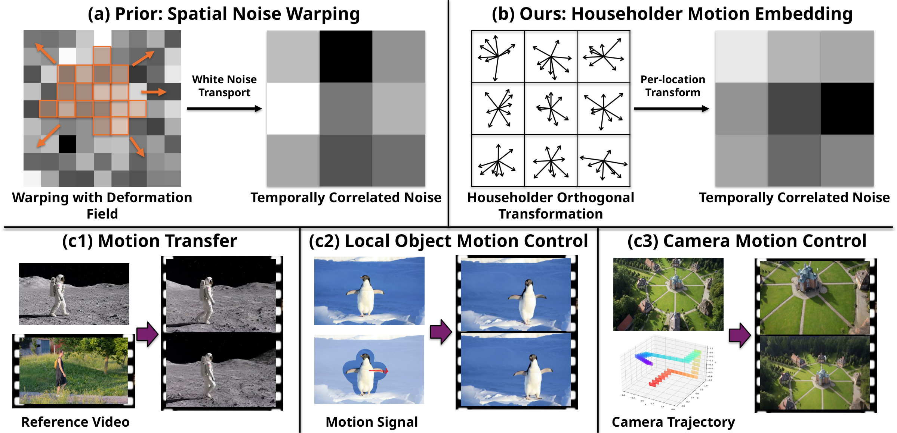
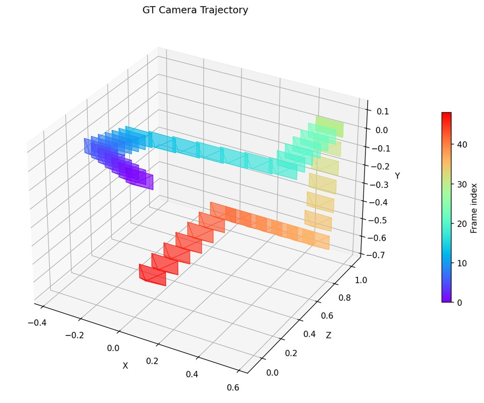
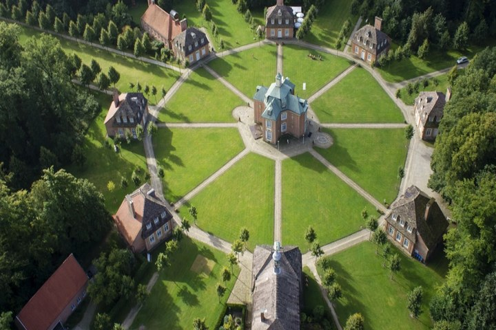
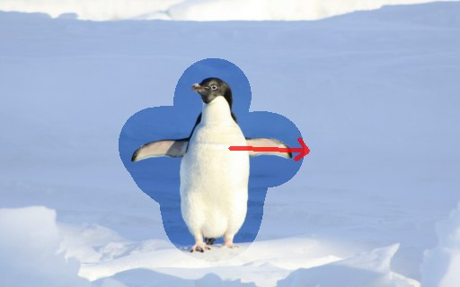
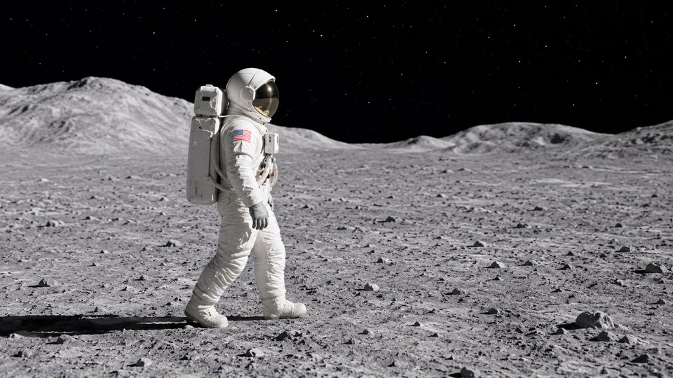

Abstract
Diffusion models for video generation have achieved remarkable success, yet precise motion control under explicit user guidance remains challenging. Recent noise-warping methods introduce temporal correlations by warping the noise according to the user-provided motion signal. However, standard spatial warping generally disrupts the noise’s i.i.d. Gaussian structure, requiring distribution correction, such as Jacobian-based correction, but at a substantial computational overhead. We propose Householder Motion Embedding (HME), which encodes the motion signal into the noise through a sequence of Householder reflections that together form an orthogonal transformation applied to each location’s channel vector. HME exactly preserves the spatial Gaussian structure within each frame while introducing cross-frame correlations that promote temporally consistent video. HME is agnostic to the network architecture and integrates directly into standard video diffusion fine-tuning pipelines. Experiments on different scenarios show that HME matches or outperforms the state of the art, while achieving a 2.7× speedup over noise warping. These results demonstrate that per-location Householder transformations in channel space offer a principled and efficient alternative to noise warping for motion-controllable video generation.

Gallery
All results are generated from a single first frame. Pick an example, then compare HME with each baseline side by side, or show all methods at once. Videos play in sync.
Highlights
Inputs and HME results for the three applications.
Camera motion control


Local object motion control

Motion transfer

Motion transfer
The motion of a reference video is transferred to a new video generated from its first frame (DAVIS), or to a different scene described by a text prompt.
Local object motion control
A user-drawn drag on the first frame moves the selected object, while the background stays consistent (MC-Bench).
Camera motion control
The camera follows the trajectory of the reference video, converted into optical flow (DL3DV).
Controlling motion strength with γ
The noise degradation level γ blends the motion-embedded noise with fresh Gaussian noise. Lower γ follows the input flow more closely; higher γ leaves the model more generative freedom. We use γ = 0.3 by default.
BibTeX
@inproceedings{lin2026hme,
title = {Householder Motion Embedding: Noise Modulation for
Motion-Controllable Video Generation},
author = {Lin, Tao Jun and Ni, Jinhong and Zha, Ruyi and Wang, Yifu
and Song, Xibin and Ji, Pan and Li, Hongdong},
booktitle = {Advances in Neural Information Processing Systems (NeurIPS)},
year = {2026}
}